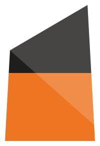

Silurian
For pharmaceutical and other regulated industries. UK based.
#1
New product introduction and site change programmes, run end to end. Clear milestones, named owners, and a status that means the same thing every week.
#2
Planning, procurement and technical service interfaces reviewed against what the site actually does. Bottlenecks identified with the data behind them, and a recommendation rather than a list of options.
#3
Project management and account management teams coached in place, with the governance and reporting standards left behind in working order. The measure of the engagement is that it ends.
#4
Working with Independent regulatory and quality specialists through established partnerships. Advice available while decisions are being made, without carrying the headcount when it is not needed.
The Silurian is the period that laid down much of the ground under South Wales. The name was chosen for what it describes: the layer everything else is built on.
Behind it are twenty years of experience in regulated manufacturing and pharmaceutical supply chain. Work is taken on directly, not brokered.
#1
“One of the best project leaders I’ve worked with throughout my career.”
Director of Quality Operations, pharmaceutical manufacturer, 2025
#2
“A proven ability to lead complex initiatives across multiple geographies.”
Global Regulatory Affairs Lead, pharmaceutical manufacturer, 2025
#3
“Experience. Gravitas. Knowledge. Flexibility.”
Senior Program Manager, biopharma R&D, 2023
#1
Operating model and governance design
How decisions get made, who owns what, and the reporting that holds it together.
#2
Portfolio prioritisation and recovery
Cutting an overloaded portfolio back to what can actually be delivered, then getting it moving.
#3
Product launch and operational readiness
Commercial, supply, quality, regulatory and manufacturing planned against one date.
#4
Artwork, labelling and serialisation
Process and data harmonised across sites and external partners.
#5
Regulated business change
Change delivered without putting compliance or supply at risk.
#6
Supply continuity and risk mitigation
Exposure identified early, with the mitigation named alongside it.